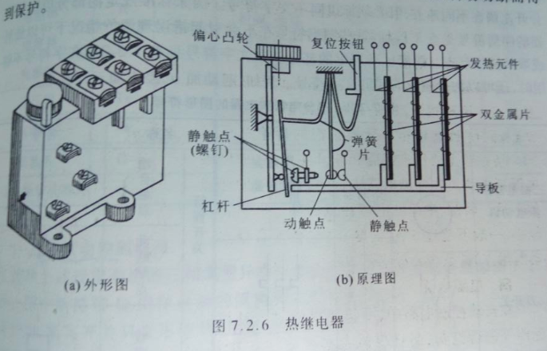
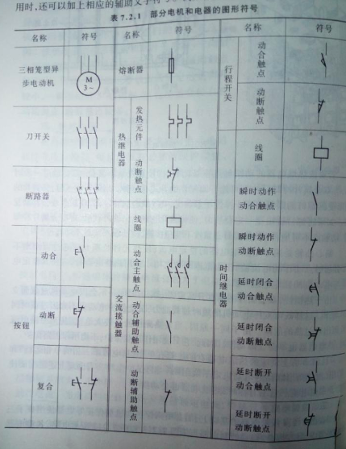
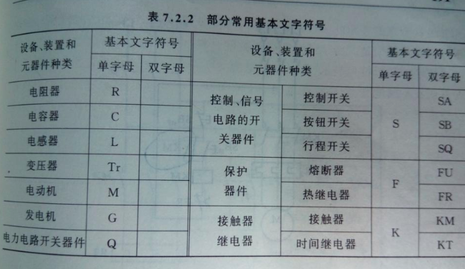

今日点点滴滴的记录
明日都将成为你最宝贵的财富
我们知道，电动机不允许长期过载运行，但又具有一定的短时间过载能力，因此，当电机过载时间不长，温度未超过未允许值，应该允许电机继续运行，当超过了，就应该立即断开。这样既保护电机不受过热危害，有可以发挥它的短时过载能力。
熔断器通常只能做短路保护，不能用作过载保护。所以热继电器成为了目前常用的过载保护电器。
热继电器的工作原理是由流入热元件的电流产生热量，使有不同膨胀系数的双金属片发生形变，当形变达到一定距离时，就推动连杆动作，使控制电路断开，从而使接触器失电，主电路断开，实现电动机的过载保护。
部分电机和电器的图形符号
部分常用基本文字符号
